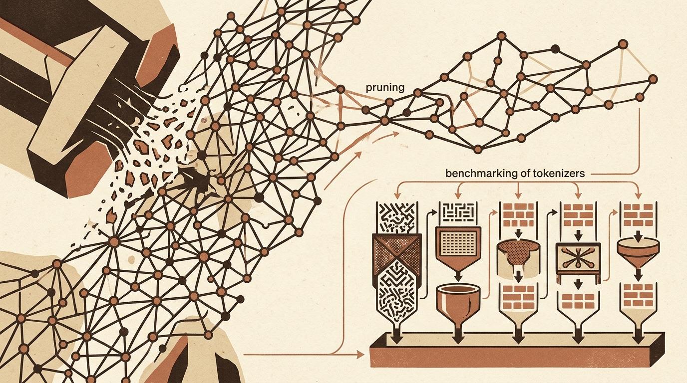

Daily digest
-
Towards Data Science
Evaluating Model Safety, Operational Data Valuation, and Production Code Risks
Recent developments in machine learning highlight evolving standards in safety evaluation, model architecture, and practical pipeline maintenance. As frontier models advance—demonstrated by OpenAI's GPT-6 Astra reaching…
-
KDnuggets
Practical AI Integration and High-Performance Data Workflows
Software developers and data engineers are focusing on converting standard scripts into automated pipelines while optimizing backend processing. Recent technical guides detail how standard Python applications can evolve…
-

Hugging Face Blog
Physics-Based Model Pruning and Benchmarking Tokenizers v1
Recent updates from the Hugging Face blog focus on improving efficiency across different layers of the machine learning pipeline, spanning structural model compression and core text processing infrastructure. These…
-
arXiv cs.LG
Scaling Laws, Domain Applications, and AI Evaluation Dynamics in Machine Learning
Recent theoretical and architectural advances focus on improving efficiency and understanding performance limits across diverse computing paradigms. To address memory-bandwidth bottlenecks in long-context language model…